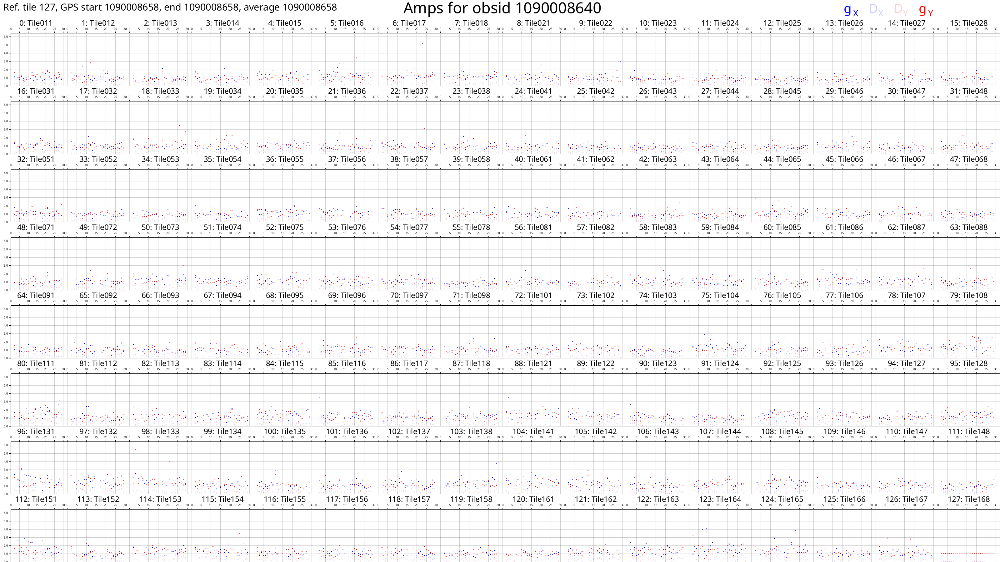
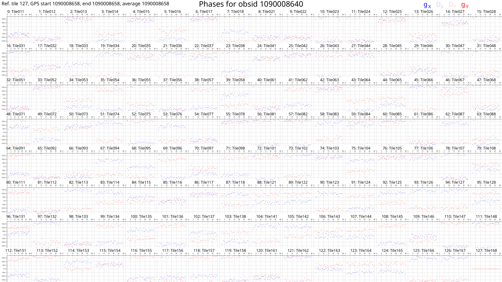
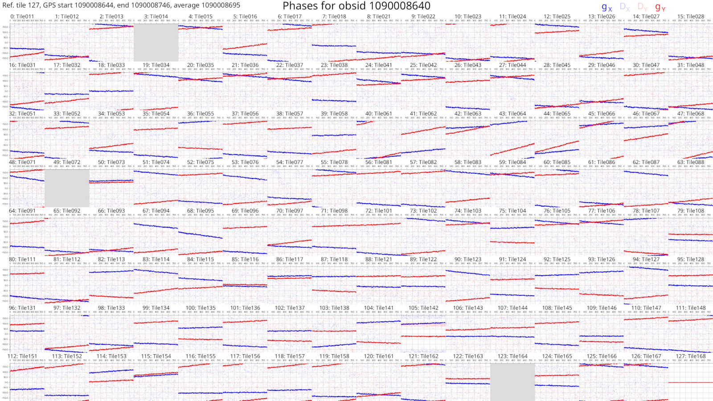
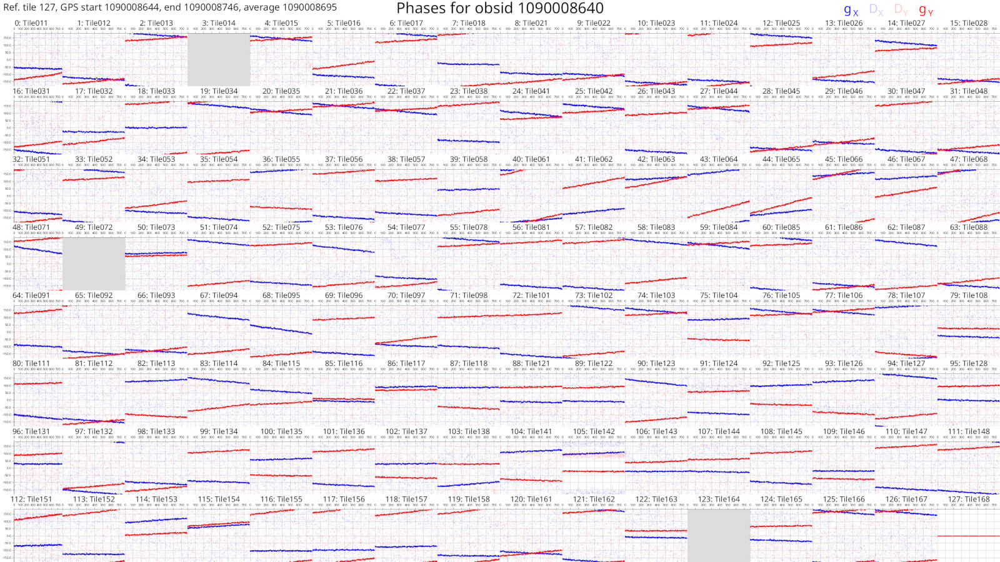

Introduction

mwa_hyperdrive (simply referred to as hyperdrive) is calibration software
for the Murchison Widefield Array radio telescope. The documentation contained
in this book aims to help understand how to use it and how it works.
Some of the more useful parts of this documentation might be:
-
a user guide; e.g.
-
definitions and concepts; e.g.
Installation
The easiest way to get access to hyperdrive is to download a pre-compiled
binary from GitHub. Instructions are on the next page.
However, you may need to compile hyperdrive from source. If so, see the
instructions here (note that the code will likely run faster
if you compile it from source).
Finally, regardless of how you get the hyperdrive binary, follow the post
installation instructions.
Installing hyperdrive from pre-compiled binaries
Visit the GitHub releases page. You should see releases like the following:

- Under "Assets", download one of the
tar.gzfiles starting withmwa_hyperdrive; - Untar it (e.g.
tar -xvf mwa_hyperdrive*.tar.gz); and - Run the binary (
./hyperdrive).
If you intend on running hyperdrive on a desktop GPU, then you probably want
the "CUDA-single" release. You can still use the double-precision version on a
desktop GPU, but it will be much slower than single-precision. Instructions to
install CUDA are on the next page.
It is possible to run hyperdrive with HIP (i.e. the AMD equivalent to
NVIDIA's CUDA), but HIP does not appear to offer static libraries, so no static
feature is provided, and users will need to compile hyperdrive themselves with
instructions on the next page.
The pre-compiled binaries are made by GitHub actions using:
cargo build --release --locked --no-default-features --features=hdf5-static,cfitsio-static
This means they cannot plot calibration solutions.
"CUDA-double" binaries have the cuda feature and "CUDA-single" binaries have
the cuda and gpu-single features. CUDA cannot legally be statically linked
so a local installation of CUDA is required.
Installing hyperdrive from source code
Dependencies
hyperdrive depends on these C libraries:
- Ubuntu:
libcfitsio-dev - Arch:
cfitsio - Library and include dirs can be specified manually with
CFITSIO_LIBandCFITSIO_INC- If not specified,
pkg-configis used to find the library.
- If not specified,
- Can compile statically; use the
cfitsio-staticorall-staticfeatures.- Requires a C compiler and
autoconf.
- Requires a C compiler and
- Ubuntu:
libhdf5-dev - Arch:
hdf5 - The library dir can be specified manually with
HDF5_DIR- If not specified,
pkg-configis used to find the library.
- If not specified,
- Can compile statically; use the
hdf5-staticorall-staticfeatures.- Requires
CMakeversion 3.10 or higher.
- Requires
Optional dependencies
- Only required if the
plottingfeature is enabled (which it is by default) - Version must be
>=2.11.1 - Arch:
pkg-configmakecmakefreetype2 - Ubuntu:
libfreetype-devlibexpat1-dev - Installation may be eased by using the
fontconfig-dlopenfeature. This means thatlibfontconfigis used at runtime, and not found and linked at link time.
- Only required if the
cudafeature is enabled - Requires a CUDA-capable device
- Arch:
cuda - Ubuntu and others: Download link
- The library dir can be specified manually with
CUDA_LIB- If not specified,
/usr/local/cudaand/opt/cudaare searched.
- If not specified,
- Can link statically; use the
cuda-staticorall-staticfeatures.
- Only required if either the
hipfeature is enabled - Requires a HIP-capable device (N.B. This seems to be incomplete)
- Arch:
- See https://wiki.archlinux.org/title/GPGPU#ROCm
- It is possible to get pre-compiled products from the arch4edu repo.
- Ubuntu and others: Download link
- The installation dir can be specified manually with
HIP_PATH- If not specified,
/opt/rocm/hipis used.
- If not specified,
- N.B. Despite HIP installations being able to run HIP code on NVIDIA GPUs,
this is not supported by
hyperdrive; please compile with the CUDA instructions above.
Installing Rust
hyperdrive is written in Rust, so a Rust
environment is required. The Rust
book has excellent
information to do this. Similar, perhaps more direct information is
here.
Do not use apt to install Rust components.
Installing hyperdrive from crates.io
cargo install mwa_hyperdrive --locked
If you want to download the source code and install it yourself, read on.
Manually installing from the hyperdrive repo
Clone the git repo and point cargo to it:
git clone https://github.com/MWATelescope/mwa_hyperdrive
cargo install --path mwa_hyperdrive --locked
This will install hyperdrive to ~/.cargo/bin/hyperdrive. This binary can be
moved anywhere and it will still work. The installation destination can be
changed by setting CARGO_HOME.
It is possible to compile with more optimisations if you give --profile production to the cargo install command. This may make things a few percent
faster, but compilation will take much longer.
Do you have a CUDA-capable NVIDIA GPU? Ensure you have installed CUDA (instructions are above), find your CUDA device's compute capability here (e.g. Geforce RTX 2070 is 7.5), and set a variable with this information (note the lack of a period in the number):
export HYPERDRIVE_CUDA_COMPUTE=75
Now you can compile hyperdrive with CUDA enabled (single-precision floats):
cargo install --path . --locked --features=cuda,gpu-single
If you're using "datacentre" products (e.g. a V100 available on the Pawsey-hosted supercomputer "garrawarla"), you probably want double-precision floats:
cargo install --path . --locked --features=cuda
You can still compile with double-precision on a desktop GPU, but it will be much slower than single-precision.
If you get a compiler error, it may be due to a compiler mismatch. CUDA releases
are compatible with select versions of gcc, so it's important to keep the CUDA
compiler happy. You can select a custom C++ compiler with the CXX variable,
e.g. CXX=/opt/cuda/bin/g++.
Do you have a HIP-capable AMD GPU? Ensure you have installed HIP (instructions
are above), and compile with the hip feature (single-precision floats):
cargo install --path . --locked --features=hip,gpu-single
If you're using "datacentre" products (e.g. the GPUs on the "setonix" supercomputer), you probably want double-precision floats:
cargo install --path . --locked --features=hip
You can still compile with double-precision on a desktop GPU, but it will be much slower than single-precision.
If you are encountering problems, you may need to set your HIP_PATH variable.
The aforementioned C libraries can each be compiled by cargo. all-static
will statically-link all dependencies (including CUDA, if CUDA is enabled) such
that you need not have these libraries available to use hyperdrive.
Individual dependencies can be statically compiled and linked, e.g.
cfitsio-static. See the dependencies list above for more information.
cargo features can be chained in a comma-separated list:
cargo install --path . --locked --features=cuda,all-static
If you're having problems compiling, it's possible you have an older Rust toolchain installed. Try updating it:
rustup update
If that doesn't help, try cleaning the local build directories:
cargo clean
and try compiling again. If you're still having problems, raise a GitHub issue describing your system and what you've tried.
hyperdrive used to depend on the ERFA C
library. It now uses a pure-Rust equivalent.
Post installation instructions
Many hyperdrive functions require the beam code to function. The MWA FEE beam
HDF5 file can be obtained with:
wget http://ws.mwatelescope.org/static/mwa_full_embedded_element_pattern.h5
Move the h5 file anywhere you like, and put the file path in the
MWA_BEAM_FILE environment variable:
export MWA_BEAM_FILE=/path/to/mwa_full_embedded_element_pattern.h5
See the README for hyperbeam
for more info.
Introduction
hyperdrive aims to make users' lives as easy as possible. Commands should
always have good quality help text, errors and output messages. However, users
may have questions that the hyperdrive binary itself cannot answer; that's
where this documentation comes in.
If ever you find hyperdrive's help text lacking or this documentation doesn't
answer your question, feel free to file an
issue (or even better,
file a PR!).
Getting started
Do you want to do some calibration, but don't know how to start? Can't remember what that command-line argument is called? If ever you're in doubt, consult the help text:
# Top-level help
hyperdrive --help
# di-calibrate help
hyperdrive di-calibrate --help
di-calibrate is one of many subcommands. Subcommands are accessed by typing
them after hyperdrive. Each subcommand accepts --help (as well as -h).
Detailed usage information on each subcommand can be seen in the table of
contents of this book. More information on subcommands as a concept is below.
hyperdrive itself is split into many subcommands. These are simple to list:
hyperdrive -h
# OR
hyperdrive --help
Output (edited for brevity):
SUBCOMMANDS:
di-calibrate
vis-simulate
solutions-convert
solutions-plot
srclist-by-beam
The help text for these is accessible in a similar way:
hyperdrive solutions-plot -h
# OR
hyperdrive solutions-plot --help
hyperdrive-solutions-plot 0.2.0-alpha.11
Plot calibration solutions. Only available if compiled with the "plotting" feature.
USAGE:
hyperdrive solutions-plot [OPTIONS] [SOLUTIONS_FILES]...
ARGS:
<SOLUTIONS_FILES>...
OPTIONS:
-r, --ref-tile <REF_TILE> The reference tile to use. If this isn't specified, the best one from the end is used
-n, --no-ref-tile Don't use a reference tile. Using this will ignore any input for `ref_tile`
--ignore-cross-pols Don't plot XY and YX polarisations
--min-amp <MIN_AMP> The minimum y-range value on the amplitude gain plots
--max-amp <MAX_AMP> The maximum y-range value on the amplitude gain plots
-m, --metafits <METAFITS> The metafits file associated with the solutions. This provides additional information on the plots, like the tile names
-v, --verbosity The verbosity of the program. Increase by specifying multiple times (e.g. -vv). The default is to print only high-level information
-h, --help Print help information
-V, --version Print version information
It's possible to save keystrokes when subcommands aren't ambiguous, e.g. use
solutions-p as an alias for solutions-plot:
hyperdrive solutions-p
<help text for "solutions-plot">
This works because there is no other subcommand that solutions-p could refer
to. On the other hand, solutions won't be accepted because both
solutions-plot and solutions-convert exist.
di-c works for di-calibrate. Unfortunately this is not perfect; the - is
required even though di should be enough.
DI calibration
Direction-Independent (DI) calibration "corrects" raw telescope data.
hyperdrive achieves this with "sky model calibration". This can work very
well, but relies on two key assumptions:
- The sky model is an accurate reflection of the input data; and
- The input data are not too contaminated (e.g. by radio-frequency interference).
A high-level overview of the steps in di-calibrate are below. Solid lines
indicate actions that always happen, dashed lines are optional:
%%{init: {'theme':'dark', 'themeVariables': {'fontsize': 20}}}%%
flowchart TD
InputData[fa:fa-file Input data files]-->Args
SkyModel[fa:fa-file Sky-model source-list file]-->Args
Settings[fa:fa-cog Other settings]-.->Args
Args[fa:fa-cog User arguments]-->Valid{fa:fa-code Valid?}
Valid --> cal
subgraph cal[For all timeblocks]
Read[fa:fa-code Read a timestep\nof input data]
Model["fa:fa-code Generate model vis\n (CPU or GPU)"]
Model-.->WriteModelVis[fa:fa-save Write model visibilities]
LSQ[fa:fa-code Calibrate via least squares]
Read-->LSQ
Model-->LSQ
LSQ-->|Iterate|LSQ
LSQ-->Sols[fa:fa-wrench Accumulate\ncalibration solutions]
end
cal-->WriteSols[fa:fa-save Write calibration solutions]
DI calibration tutorial
Here, a series of steps are laid out to demonstrate how raw MWA data is
calibrated with hyperdrive. We also plot calibration solutions and image
calibrated data with wsclean.
Install hyperdrive if you haven't already.
Feel free to try your own data, but test data is available in the hyperdrive
repo; download it with this command:
git clone https://github.com/MWATelescope/mwa_hyperdrive --depth 1
cd mwa_hyperdrive
The files are test_files/1090008640/1090008640_20140721201027_gpubox01_00.fits
and test_files/1090008640/1090008640.metafits. This is tiny part of the real
1090008640
observation used
in hyperdrive tests.
It's very important to use a sky model that corresponds to the data you're using. For EoR fields, srclists contains many suitable source lists.
Here, a source list is already provided for testing:
test_files/1090008640/srclist_pumav3_EoR0aegean_EoR1pietro+ForA_1090008640_100.yaml.
We're going to run the di-calibrate subcommand of hyperdrive. If you look at
the help (with hyperdrive di-calibrate --help), you should see the --data
(-d for short) and --source-list (-s for short) flags under an INPUT FILES header. These are the only two things needed to do calibration:
hyperdrive di-calibrate -d test_files/1090008640/1090008640_20140721201027_gpubox01_00.fits test_files/1090008640/1090008640.metafits -s test_files/1090008640/srclist_pumav3_EoR0aegean_EoR1pietro+ForA_1090008640_100.yaml
The above command can be more neatly expressed as:
hyperdrive di-calibrate \
-d test_files/1090008640/1090008640_20140721201027_gpubox01_00.fits \
test_files/1090008640/1090008640.metafits \
-s test_files/1090008640/srclist_pumav3_EoR0aegean_EoR1pietro+ForA_1090008640_100.yaml
This isn't specific to hyperdrive; this is just telling your shell to use
multiple lines separated by \.
The command we ran in step 3 should give us information on the input data, the sky model, any output files, as well as things relating to calibration. One line reports:
Reading input data and sky modelling
This indicates that hyperdrive is reading the data from disk and generating
model visibilities. This is usually the slowest part of the whole process, so
depending on your inputs, this could take some time. You should also see some
progress bars related to these two tasks.
Once the progress bars are finished, calibration can begin. You should see many lines like:
Chanblock 11: converged (50): 1e-4 > 9.57140e-7 > 1e-8
This indicates three things:
- Chanblock 11 converged;
- 50 iterations were performed; and
- The final error was 9.57140e-7, which is between 1e-4 and 1e-8.
A "chanblock" is a frequency unit of calibration; it may correspond to one or many channels of the input data.
Calibration is done iteratively; it iterates until the "stop threshold" is reached, or up to a set number of times. The "stop" and "minimum" thresholds are used during convergence. If the stop threshold is reached before the maximum number of iterations, we say that the chanblock has converged well enough that we can stop iterating. However, if we reach the maximum number of iterations, one of two things happens:
- The chanblock convergence has not reached the stop threshold but exceed the
minimum threshold.
- In this case, we say the chanblock converged and note that it didn't reach the stop threshold.
- The chanblock convergence has not reached either the stop or minimum (1e-4
by default) thresholds.
- In this case, we say the chanblock did not converge ("failed").
All of these calibration parameters (maximum iterations, stop threshold, minimum threshold) are allowed to be adjusted.
Don't assume that things will always work! A good indicator of how calibration
went is given toward the end of the output of di-calibrate:
All timesteps: 27/27 (100%) chanblocks converged
In this case, all chanblocks converged, giving us confidence that things went OK. But there are other things we can do to inspect calibration quality; good examples are plotting the solutions, and imaging the calibrated data.
First, we need to know where the solutions were written; this is also reported
toward the end of the output of di-calibrate:
INFO Calibration solutions written to hyperdrive_solutions.fits
So the solutions are at hyperdrive_solutions.fits. We can make plots with solutions-plot; i.e.
hyperdrive solutions-plot hyperdrive_solutions.fits
The command should give output like this:
INFO Wrote ["hyperdrive_solutions_amps.png", "hyperdrive_solutions_phases.png"]
These plots should look something like this:
 
Each box corresponds to an MWA tile and each tile has dots plotted for each channel we calibrated. The dots are really hard to see because there are only 27 channels with solutions. However, if we look very closely, we can see that, generally, the dot values don't change much with frequency (particularly for the amps), or the dot values change steadily with frequency (particularly for the phases). This also hints that the calibration solutions are good.
The solutions plots for the full 1090008640 observation look like this:
 

Things are much easier to see when there are more dots! As before, changes with frequency are small or smooth.
More information on the calibration solutions file formats can be seen here.
We have calibration solutions, but not calibrated data. We need to "apply" the solutions to data to calibrate them:
hyperdrive solutions-apply \
-d test_files/1090008640/1090008640_20140721201027_gpubox01_00.fits \
test_files/1090008640/1090008640.metafits \
-s hyperdrive_solutions.fits \
-o hyp_cal.ms
This will write calibrated visibilities to hyp_cal.ms. Now we can image the
measurement set with wsclean:
wsclean -size 4096 4096 -scale 40asec -niter 1000 -auto-threshold 3 hyp_cal.ms
This writes an image file to wsclean-image.fits. You can use many FITS file
viewers to inspect the image, but here's what it looks like with
DS9:

Sources are visible! Generally the image quality is OK, but not great. This is because there was very little input data.
When using the full 1090008640 observation, this is what the same image looks like (note that unlike the above image, "sqrt" scaling is used):

Many more sources are visible, and the noise is much lower. Depending on your science case, these visibilities might be "science ready".
Simple usage of DI calibrate
DI calibration is done with the di-calibrate subcommand, i.e.
hyperdrive di-calibrate
At the very least, this requires:
- Input data (with the flag
-d) - A sky model (with the flag
-s)- Supported formats
- PUMA sky models suitable for EoR calibration (and perhaps other parts of the sky) can be obtained here (at the time of writing srclist_pumav3_EoR0aegean_fixedEoR1pietro+ForA_phase1+2.txt is preferred)
Examples
Note that a metafits may not be required, but is generally a good idea.
hyperdrive di-calibrate -d *.ms *.metafits -s a_good_sky_model.yaml
Note that a metafits may not be required, but is generally a good idea.
hyperdrive di-calibrate -d *.uvfits *.metafits -s a_good_sky_model.yaml
Writing out calibrated data
di-calibrate does not write out calibrated data (visibilities); see
solutions-apply. You will need calibration
solutions, so refer to the previous pages on DI calibration to get those.
Calibrated visibilities are written out in one of the supported formats and can be averaged.
Varying solutions over time
See this page for information on timeblocks.
By default, di-calibrate uses only one "timeblock", i.e. all data timesteps
are averaged together during calibration. This provides good signal-to-noise,
but it is possible that calibration is improved by taking time variations into
account. This is done with --timesteps-per-timeblock (-t for short).
If --timesteps-per-timeblock is given a value of 4, then every 4 timesteps are
calibrated together and written out as a timeblock. Values with time units (e.g.
8s) are also accepted; in this case, every 8 seconds worth of data are
averaged during calibration and written out as a timeblock.
Depending on the number of timesteps in the data, using -t could result in
many timeblocks written to the calibration solutions. Each solution timeblock
is plotted when these solutions are given to solutions-plot. For each timestep
in question, the best solution timeblock is used when running solutions-apply.
Implementation
When multiple timeblocks are to be made, hyperdrive will do a pass of
calibration using all timesteps to provide each timeblock's calibration with a
good "initial guess" of what their solutions should be.
Usage on garrawarla
garrawarla
is a supercomputer dedicated to MWA activities hosted by the Pawsey
Supercomputing Centre. This MWA wiki
page
details how to use hyperdrive there.
How does it work?
hyperdrive's direction-independent calibration is based off of a sky model.
That is, data visibilities are compared against "sky model" visibilities, and
the differences between the two are used to calculate antenna gains (a.k.a.
calibration solutions).
Here is the algorithm used to determine antenna gains in hyperdrive:
\[ G_{p,i} = \frac{ \sum_{q,q \neq p} D_{pq} G_{q,i-1} M_{pq}^{H}}{ \sum_{q,q \neq p} (M_{pq} G_{q,i-1}^{H}) (M_{pq} G_{q,i-1}^{H})^{H} } \]
where
- \( p \) and \( q \) are antenna indices;
- \( G_{p} \) is the gain Jones matrix for an antenna \( p \);
- \( D_{pq} \) is a "data" Jones matrix from baseline \( pq \);
- \( M_{pq} \) is a "model" Jones matrix from baseline \( pq \);
- \( i \) is the current iteration index; and
- the \( H \) superscript denotes a Hermitian transpose.
The maximum number of iterations can be changed at run time, as well as thresholds of acceptable convergence (i.e. the amount of change in the gains between iterations).
This iterative algorithm is done independently for every individual channel supplied. This means that if, for whatever reason, part of the data's band is problematic, the good parts of the band can be calibrated without issue.
StefCal? MitchCal?
It appears that StefCal (as well as MitchCal) is no different to "antsol" (i.e. the above equation).
Solutions apply
solutions-apply takes calibration solutions and applies them to input
visibilities before writing out visibilities. All input formats are supported,
however hyperdrive-style calibration solutions are preferred because they are
unambiguous when applying multiple timeblocks.
apply-solutions can be used instead of solutions-apply.
A high-level overview of the steps in solutions-apply are below. Solid lines
indicate actions that always happen, dashed lines are optional:
%%{init: {'theme':'dark', 'themeVariables': {'fontsize': 20}}}%%
flowchart TD
InputData[fa:fa-file Input data files]-->Args
CalSols[fa:fa-wrench Calibration\nsolutions]-->Args
Settings[fa:fa-cog Other settings]-.->Args
Args[fa:fa-cog User arguments]-->Valid{fa:fa-code Valid?}
Valid --> apply
subgraph apply[For all timesteps]
Read[fa:fa-code Read a timestep\nof input data]
Read-->Apply["fa:fa-code Apply calibration\nsolutions to timeblock"]
Apply-->Write[fa:fa-save Write timeblock\nvisibilities]
end
Simple usage of solutions apply
Use the solutions-apply subcommand, i.e.
hyperdrive solutions-apply
At the very least, this requires:
- Input data (with the flag
-d) - Calibration solutions (with the flag
-s)
Examples
hyperdrive solutions-apply -d *gpubox*.fits *.metafits *.mwaf -s hyp_sols.fits -o hyp_cal.ms
hyperdrive solutions-apply -d *.ms -s hyp_sols.fits -o hyp_cal.ms
Generally the syntax is the same as di-calibrate.
Plot solutions
Plotting calibration solutions is not available for GitHub-built releases of
hyperdrive. hyperdrive must be built with the plotting cargo feature;
see the installation from source instructions
here.
hyperdrive is capable of producing plots of calibration solutions for any of
its supported file formats. Note that only
hyperdrive-formatted calibration solutions can contain tile names; when tile
names are unavailable, they won't be on the plots unless a corresponding
metafits file is provided. With or without tile names, an index is provided.
By default, a reference tile is selected and reported at the top left of the plot. (By default, the last tile that isn't comprised of only NaNs is selected, but this can be manually chosen.) It is also possible to neglect using any reference tile. With a reference tile, each tile's solutions are divided by the reference's solutions, and the resulting Jones matrix values are plotted (the legend is indicated at the top right of each plot). \( g_x \) is the gain on a tile's X polarisation and \( g_y \) is the gain on a tile's Y polarisation. \( D_x \) and \( D_y \) are the leakage terms of those polarisations.
By default, the y-axis of amplitude plots capture the entire range of values.
These plots can therefore be skewed by bad tiles; it is possible to control the
range by specifying --max-amp and --min-amp.
If a calibration solutions file contains multiple timeblocks, plots are produced for each timeblock. Timeblock information is given at the top left, if available.
Example plots
Amplitudes ("amps")

Phases
Convert visibilities
vis-convert reads in visibilities and writes them out, performing whatever
transformations were requested on the way (e.g. ignore autos, average to a
particular time resolution, flag some tiles, etc.).
hyperdrive vis-convert \
-d *gpubox* *.metafits \
--tile-flags Tile011 Tile012 \
-o hyp_converted.uvfits hyp_converted.ms
hyperdrive vis-convert \
-d *.uvfits \
--no-autos \
-o hyp_converted.ms
Simulate visibilities
vis-simulate effectively turns a sky-model source list into visibilities.
Considerations
Disabling beam attenuation
--no-beam
Dead dipoles
By default, dead dipoles in the
metafits are used. These will affect the generated
visibilities. You can disable them with --unity-dipole-gains.
Vetoing
Source-list vetoing can do unexpected things. You can effectively disable it by
supplying --veto-threshold 0, although the veto routine will still:
- Remove sources below the horizon; and
- Sort the remaining sources by brightness based off of the centre frequencies MWA coarse channels.
Subtract visibilities
vis-subtract can subtract the sky-model visibilities from calibrated data
visibilities and write them out. This can be useful to see how well the sky
model agrees with the input data, although direction-dependent effects (e.g. the
ionosphere) may be present and produce "holes" in the visibilities, e.g.:

A high-level overview of the steps in vis-subtract are below. Solid lines
indicate actions that always happen, dashed lines are optional:
%%{init: {'theme':'dark', 'themeVariables': {'fontsize': 20}}}%%
flowchart TD
InputData[fa:fa-file Calibrated input data]-->Args
CalSols[fa:fa-file Sky-model source-list file]-->Args
Settings[fa:fa-cog Other settings]-.->Args
Args[fa:fa-cog User arguments]-->Valid{fa:fa-code Valid?}
Valid --> subtract
subgraph subtract[For all timesteps]
Read[fa:fa-code Read a timestep\nof input data]
Read-->Apply["fa:fa-code Generate model vis\nand subtract it from input data"]
Apply-->Write[fa:fa-save Write timeblock\nvisibilities]
end
Get beam responses
The beam subcommand can be used to obtain beam responses from any of the
supported beam types. The output format is
tab-separated values (tsv).
The responses are calculated by moving the zenith angle from 0 to the --max-za
in steps of --step, then for each of these zenith angles, moving from 0 to
\( 2 \pi \) in steps of --step for the azimuth. Using a smaller --step
will generate many more responses, so be aware that it might take a while.
If CUDA or HIP is available to you, the --gpu flag will generate the beam
responses on the GPU, vastly decreasing the time taken.
#!/usr/bin/env python3
import numpy as np
import matplotlib.pyplot as plt
data = np.genfromtxt(fname="beam_responses.tsv", delimiter="\t", skip_header=0)
fig, ax = plt.subplots(1, 2, subplot_kw=dict(projection="polar"))
p = ax[0].scatter(data[:, 0], data[:, 1], c=data[:, 2])
plt.colorbar(p)
p = ax[1].scatter(data[:, 0], data[:, 1], c=np.log10(data[:, 2]))
plt.colorbar(p)
plt.show()
Instrumental polarisations
In hyperdrive (and mwalib and
hyperbeam), the X
polarisation refers to the East-West dipoles and the Y refers to North-South.
Note that this contrasts with the IAU definition of X and Y, which is opposite
to this. However, this is consistent within the MWA.
MWA visibilities in raw data products are ordered XX, XY, YX, YY where X is
East-West and Y is North-South. Birli and cotter also write pre-processed
visibilities this way.
wsclean expects its input measurement sets to be in the IAU order, meaning
that, currently, hyperdrive outputs are (somewhat) inappropriate for usage
with wsclean. We are discussing how to move forward given the history of MWA
data processing and expectations in the community.
We expect that any input data contains 4 cross-correlation polarisations (XX XY
YX YY), but hyperdrive is able to read the following combinations out of the
supported input data types:
- XX
- YY
- XX YY
- XX XY YY
In addition, uvfits files need not have a weight associated with each polarisation.
Stokes polarisations
In hyperdrive:
- \( \text{XX} = \text{I} - \text{Q} \)
- \( \text{XY} = \text{U} - i\text{V} \)
- \( \text{YX} = \text{U} + i\text{V} \)
- \( \text{YY} = \text{I} + \text{Q} \)
where \( \text{I} \), \( \text{Q} \), \( \text{U} \), \( \text{V} \) are Stokes polarisations and \( i \) is the imaginary unit.
Supported visibility formats for reading
Raw "legacy" MWA data comes in "gpubox" files. "MWAX" data comes in a similar
format, and *ch???*.fits is a useful glob to identify them. Raw data can be
accessed from the ASVO.
Here are examples of using each of these MWA formats with di-calibrate:
hyperdrive di-calibrate -d *gpubox*.fits *.metafits *.mwaf -s a_good_sky_model.yaml
hyperdrive di-calibrate -d *ch???*.fits *.metafits *.mwaf -s a_good_sky_model.yaml
Note that all visibility formats should probably be accompanied by a metafits file. See this page for more info.
mwaf files indicate what visibilities should be flagged. See this
page for more info.
hyperdrive di-calibrate -d *.ms *.metafits -s a_good_sky_model.yaml
Measurement sets (MSs) are typically made with
Birli or
cotter
(Birli preferred). At the time of
writing, MWA-formatted measurement sets do not contain dead dipole information,
and so calibration may not be as accurate as it could be. To get around this, an
observation's metafits file can be supplied alongside the MS
to improve calibration. See
below for more info.
hyperdrive di-calibrate -d *.uvfits *.metafits -s a_good_sky_model.yaml
When reading uvfits, a metafits is not required only if the user has supplied the MWA dipole delays. At the time of writing, MWA-formatted uvfits files do not contain dipole delays or dead dipole information, and so avoiding a metafits file when calibrating may mean it is not as accurate as it could be. See below for more info.
A copy of the uvfits standard is here.
When using a metafits file with a uvfits/MS, the tile names in the metafits and uvfits/MS must exactly match. Only when they exactly match are the dipole delays and dipole gains able to be applied properly. If they don't match, a warning is issued.
MWA uvfits/MS files made with Birli or cotter will always match their
observation's metafits tile names, so this issue only applies to uvfits/MS files
created elsewhere.
Supported visibility formats for writing
The following examples illustrate how to produce each of the supported
visibility file formats with solutions-apply, but other aspects of
hyperdrive are also able to produce these file formats, and all aspects are
able to perform averaging and write to multiple outputs.
hyperdrive solutions-apply \
-d *gpubox*.fits *.metafits \
-s hyp_sols.fits \
-o hyp_cal.ms
hyperdrive solutions-apply \
-d *gpubox*.fits *.metafits \
-s hyp_sols.fits \
-o hyp_cal.uvfits
A copy of the uvfits standard is here.
When writing out visibilities, they can be averaged in time and frequency. Units can be given to these; e.g. using seconds and kiloHertz:
hyperdrive solutions-apply \
-d *gpubox*.fits *.metafits *.mwaf \
-s hyp_sols.fits \
-o hyp_cal.ms \
--time-average 8s \
--freq-average 80kHz
Units are not required; in this case, these factors multiply the observation's time and freq. resolutions:
hyperdrive solutions-apply \
-d *gpubox*.fits *.metafits *.mwaf \
-s hyp_sols.fits \
-o hyp_cal.ms \
--time-average 4 \
--freq-average 2
If the same observation is used in both examples, with a time resolution of 2s and a freq. resolution of 40kHz, then both commands will yield the same result.
See this page for information on how visibilities are averaged in time and frequency.
All aspects of hyperdrive that can write visibilities can write to multiple
outputs. Note that it probably does not make sense to write out more than one of
each kind (e.g. two uvfits files), as each of these files will be exactly the
same, and a simple cp from one to the other is probably faster than writing to
two files simultaneously from hyperdrive.
Example (a measurement set and uvfits):
hyperdrive solutions-apply \
-d *gpubox*.fits *.metafits *.mwaf \
-s hyp_sols.fits \
-o hyp_cal.ms hyp_cal.uvfits \
--time-average 4 \
--freq-average 2
Metafits files
The MWA tracks observation metadata with "metafits" files. Often these accompany
the raw visibilities in a download, but these could be old (such as the "PPD
metafits" files). hyperdrive does not support PPD metafits files; only new
metafits files should be used.
This command downloads a new metafits file for the specified observation ID:
OBSID=1090008640; wget "http://ws.mwatelescope.org/metadata/fits?obs_id=${OBSID}" -O "${OBSID}".metafits
Measurement sets and uvfits files do not contain MWA-specific information, particularly dead dipole information. Calibration should perform better when dead dipoles are taken into account. Measurement sets and uvfits file may also lack dipole delay information.
The database of MWA metadata can change over time for observations conducted
even many years ago, and the engineering team may decide that some tiles/dipoles
for some observations should be retroactively flagged, or that digital gains
were wrong, etc. In addition, older metafits files may not have all the metadata
that is required to be present by
mwalib, which is used by
hyperdrive when reading metafits files.
Controlling dipole gains
If the "TILEDATA" HDU of a metafits contains a "DipAmps" column, each row containing 16 double-precision values for bowties in the M&C order, these are used as the dipole gains in beam calculations. If the "DipAmps" column isn't available, the default behaviour is to use gains of 1.0 for all dipoles, except those that have delays of 32 in the "Delays" column (they will have a gain of 0.0, and are considered dead).
Dipole delays
A tile's dipole delays control where it is "pointing". Delays are provided as numbers, and this controls how long a dipole's response is delayed before its response correlated with other dipoles. This effectively allows the MWA to be more sensitive in a particular direction without any physical movement.
e.g. This set of dipole delays
6 4 2 0
8 6 4 2
10 8 6 4
12 10 8 6
has the North-East-most (top-right) dipole not being delayed, whereas all others are delayed by some amount. See this page for more info on dipole ordering.
Dipole delays are usually provided by metafits files, but can also be supplied by command line arguments, e.g.
--delays 6 4 2 0 8 6 4 2 10 8 6 4 12 10 8 6
would correspond to the example above. Note that these user-supplied delays will override delays that are otherwise provided.
Dipoles cannot be delayed by more than "31". "32" is code for "dead dipole", which means that these dipoles should not be used when modelling a tile's response.
Ideal dipole delays
Most (all?) MWA observations use a single set of delays for all tiles. Dipole delays are listed in two ways in a metafits file:
- In the
DELAYSkey in HDU 1; and - For each tile in HDU 2.
The delays in HDU 1 are referred to as "ideal" dipole delays. A set of delays are not ideal if any are "32" (i.e. dead).
However, the HDU 1 delays may all be "32". This is an indication from the
observatory that this observation is "bad" and should not be used. hyperdrive
will proceed with such observations but issue a warning. In this case, the ideal
delays are obtained by iterating over all tile delays until each delay is not
32.
Dead dipoles
Each MWA tile has 16 "bowties", and each bowtie is made up of two dipoles (one X, one Y). We refer to a "dead" dipole as one that is not functioning correctly (hopefully not receiving any power at all). This information is used in generating beam responses as part of modelling visibilities. The more accurate the visibilities, the better that calibration performs, so it is important to account for dead dipoles if possible.
Beam responses are generated with
hyperbeam and dead dipole
information is encoded as a "dipole gain" of 1 ("alive") or 0 ("dead"). It is
possible to supply other values for dipole gains with a "DipAmps" column; see
the metafits page.
For the relevant functions, dead dipole information can be ignored by supplying
a flag --unity-dipole-gains. This sets all dipole gains to 1.
At the time of writing, dead dipole information is only supplied by a metafits file.
See this page for more info on dipole ordering.
In the image below, you can see the 12th Y dipole is dead for "Tile022". All other dipoles are "alive".

mwaf flag files
mwaf files indicate what visibilities should be flagged, and should be made
with Birli (which uses
AOFlagger). They aren't necessary,
but may improve things by removing radio-frequency interference. An example of
producing them is:
birli *gpubox*.fits -m *.metafits -f birli_flag_%%.mwaf
At the time of writing, hyperdrive only utilises mwaf files when reading
visibilities from raw data.
cotter-produced mwaf files are unreliable because
- The start time of the flags is not written; and
- The number of timesteps per mwaf file can vary, further confusing things.
Many MWA observations have pre-generated mwaf files that are stored in the
archive. These should be ignored and mwaf files should be made with Birli,
versions 0.7.0 or greater.
Raw data corrections
A number of things can be done to "correct" or "pre-process" raw MWA data before
it is ready for calibration (or other analysis). These tasks are handled by
Birli, either as the Birli
executable itself, or internally in hyperdrive.
cotter used to perform these tasks
but it has been superseded by Birli.
Many MWA observations do not apply a geometric correction despite having a desired phase centre. This correction applies
\[ e^{-2 \pi i w_f / \lambda} \]
to each visibility; note the dependence on baseline \( w \) and frequency.
Not performing the geometric correction can have a dramatically adverse effect on calibration!
The poly-phase filter bank used by the MWA affects visibilities before they get saved to disk. Over time, a number of "flavours" of these gains have been used:
- "Jake Jones" (
jake; 200 Hz) - "cotter 2014" (
cotter2014; 10 kHz) - "RTS empirical" (
empirical; 40 kHz) - "Alan Levine" (
levine; 40 kHz)
When correcting raw data, the "Jake Jones" gains are used by default. For each
flavour, the first item in the parentheses (e.g. cotter2014) indicates what
should be supplied to hyperdrive if you want to use those gains instead. There
is also a none "flavour" if you want to disable PFB gain correction.
In CHJ's experience, using different flavours have very little effect on calibration quality.
Some more information on the PFB can be found here.
Each tile is connected by a cable, and that cable might have a different length to others. This correction aims to better align the signals of each tile.
Picket fence observations
A "picket fence" observation contains more than one "spectral window" (or "SPW"). That is, not all the frequency channels in an observation are continuous; there's at least one gap somewhere.
hyperdrive does not currently support picket fence observations, but it will
eventually support them properly. However, it is possible to calibrate a
single SPW of a picket fence obs. with hyperdrive; e.g. MWA observation
1329828184 has
12 SPWs. If all 24 raw data files are given to hyperdrive, it will refuse to
interact with the data. But, if you supply one of the SPWs, e.g. coarse channels
62 and 63, hyperdrive will calibrate and provide solutions for the provided
channels, i.e.
hyperdrive di-calibrate \
-d *ch{062,063}*.fits *.metafits \
-s srclist_pumav3_EoR0aegean_EoR1pietro+ForA_phase1+2_TGSSgalactic.txt \
-n 100 \
-o hyp_sols.fits
For this example, the output contains solutions for 256 channels, and only one channel did not converge.
mwalib
mwalib is the official MWA
raw-data-reading library. hyperdrive users usually don't need to concern
themselves with it, but mwalib errors may arise.
mwalib can be quite noisy with log messages (particularly at the "trace"
level); it is possible to suppress these messages by setting an environment
variable:
RUST_LOG=mwalib=error
Errors
Missing a key in the metafits file
mwalib does not support PPD metafits files; only new metafits files should be
used. See the metafits page for more info.
Others
Hopefully the error message alone is clear enough! Please file a GitHub issue if something is confusing.
Sky-model source lists
hyperdrive performs sky-model calibration. Sky-model source lists describe
what the sky looks like, and the closer the sky model matches the data to be
calibrated, the better the calibration quality.
A sky-model source list is composed of many sources, and each source is composed of at least one component. Each component has a position, a component type and a flux-density type. Within the code, a source list is a tree structure associating a source name to a collection of components.
Source list file formats have historically been bespoke. In line with
hyperdrive's goals, hyperdrive will read many source list formats, but also
presents its own preferred format (which has no limitations within this
software). Each supported format is detailed on the following documentation
pages.
hyperdrive can also convert between formats, although in a "lossy" way;
non-hyperdrive formats cannot represent all component and/or flux-density
types.
hyperdrive can convert (as best it can) between different source list formats.
hyperdrive srclist-convert takes the path to input file, and the path to the
output file to be written. If it isn't specified, the type of the input file
will be guessed. Depending on the output file name, the output source list type
may need to be specified.
hyperdrive can be given many source lists in order to test that they are
correctly read. For each input file, hyperdrive srclist-verify will print out
what kind of source list the file represents (i.e. hyperdrive, ao, rts,
...) as well as how many sources and components are within the file.
Each component in a sky model is represented in one of three ways:
- point source
- Gaussian
- shapelet
Point sources are the simplest. Gaussian sources could be considered the same as point sources, but have details on their structure (major- and minor-axes, position angle). Finally, shapelets are described the same way as Gaussians but additionally have multiple "shapelet components". Examples of each of these components can be found on the following documentation pages and in the examples directory.
Flux-density types
This page describes supported flux-density types within hyperdrive. The
following pages detail their usage within sky-model source lists. This
page details how each type is estimated in modelling.
Most astrophysical sources are modelled as power laws. These are simply described by a reference Stokes \( \text{I} \), \( \text{Q} \), \( \text{U} \) and \( \text{V} \) flux density at a frequency \( \nu \) alongside a spectral index \( \alpha \).
Curved power laws are formalised in Section 4.1 of Callingham et al. 2017. These are the same as power laws but with an additional "spectral curvature" parameter \( q \).
Both kinds of power law flux-density representations are preferred in
hyperdrive.
The list type is simply many instances of a Stokes \( \text{I} \), \( \text{Q} \), \( \text{U} \) and \( \text{V} \) value at a frequency. Example: this source (in the RTS style) has 3 defined frequencies for flux densities:
SOURCE J161720+151943 16.2889374 15.32883
FREQ 80.0e+6 1.45351 0 0 0
FREQ 100.0e+6 1.23465 0 0 0
FREQ 120.0e+6 1.07389 0 0 0
ENDSOURCE
In this case, Stokes \( \text{Q} \), \( \text{U} \) and \( \text{V} \) are all 0 (this is typical), but Stokes \( \text{I} \) is 1.45351 Jy at 80 MHz, 1.23465 Jy at 100 MHz and 1.07389 Jy at 120 MHz. This information can be used to estimate flux densities within the defined frequencies (\( 80 <= \nu_{\text{MHz}} <= 120 \); interpolation) or outside the range (\( \nu_{\text{MHz}} < 80 \) or \( \nu_{\text{MHz}} > 120 \); extrapolation).
The hyperdrive source list format
Coordinates are right ascension (RA) and declination, both with units of degrees in the J2000 epoch. All frequencies are in Hz and all flux densities are in Jy.
All Gaussian and shapelet sizes are in arcsec, but their position angles are in degrees. In an image space where RA increases from right to left (i.e. bigger RA values are on the left), position angles rotate counter clockwise. A position angle of 0 has the major axis aligned with the declination axis.
hyperdrive-style source lists can be read from and written to either the
YAML or JSON file
formats (YAML preferred). Example Python code to read and write these files is
in the examples
directory.
As most sky-models only include Stokes I, Stokes Q, U and V are not required to be specified. If they are not specified, they are assumed to have values of 0.
The following are the contents of a valid YAML file. super_sweet_source1 is a
single-component point source with a list-type flux density.
super_sweet_source2 has two components: one Gaussian with a power law, and a
shapelet with a curved power law.
super_sweet_source1:
- ra: 10.0
dec: -27.0
comp_type: point
flux_type:
list:
- freq: 150000000.0
i: 10.0
- freq: 170000000.0
i: 5.0
q: 1.0
u: 2.0
v: 3.0
super_sweet_source2:
- ra: 0.0
dec: -35.0
comp_type:
gaussian:
maj: 20.0
min: 10.0
pa: 75.0
flux_type:
power_law:
si: -0.8
fd:
freq: 170000000.0
i: 5.0
q: 1.0
u: 2.0
v: 3.0
- ra: 155.0
dec: -10.0
comp_type:
shapelet:
maj: 20.0
min: 10.0
pa: 75.0
coeffs:
- n1: 0
n2: 1
value: 0.5
flux_type:
curved_power_law:
si: -0.6
fd:
freq: 150000000.0
i: 50.0
q: 0.5
u: 0.1
q: 0.2
The following are the contents of a valid JSON file. super_sweet_source1 is a
single-component point source with a list-type flux density.
super_sweet_source2 has two components: one Gaussian with a power law, and a
shapelet with a curved power law.
{
"super_sweet_source1": [
{
"ra": 10.0,
"dec": -27.0,
"comp_type": "point",
"flux_type": {
"list": [
{
"freq": 150000000.0,
"i": 10.0
},
{
"freq": 170000000.0,
"i": 5.0,
"q": 1.0,
"u": 2.0,
"v": 3.0
}
]
}
}
],
"super_sweet_source2": [
{
"ra": 0.0,
"dec": -35.0,
"comp_type": {
"gaussian": {
"maj": 20.0,
"min": 10.0,
"pa": 75.0
}
},
"flux_type": {
"power_law": {
"si": -0.8,
"fd": {
"freq": 170000000.0,
"i": 5.0,
"q": 1.0,
"u": 2.0,
"v": 3.0
}
}
}
},
{
"ra": 155.0,
"dec": -10.0,
"comp_type": {
"shapelet": {
"maj": 20.0,
"min": 10.0,
"pa": 75.0,
"coeffs": [
{
"n1": 0,
"n2": 1,
"value": 0.5
}
]
}
},
"flux_type": {
"curved_power_law": {
"si": -0.6,
"fd": {
"freq": 150000000.0,
"i": 50.0,
"q": 0.5,
"u": 0.1
},
"q": 0.2
}
}
}
]
}
The André Offringa (ao) source list format
This format is used by calibrate within mwa-reduce (closed-source code).
RA is in decimal hours (0 to 24) and Dec is in degrees in the J2000 epoch, but sexagesimal formatted. All frequencies and flux densities have their units annotated (although these appear to only be MHz and Jy, respectively).
Point and Gaussian components are supported, but not shapelets. All Gaussian sizes are in arcsec, but their position angles are in degrees. In an image space where RA increases from right to left (i.e. bigger RA values are on the left), position angles rotate counter clockwise. A position angle of 0 has the major axis aligned with the declination axis.
Flux densities must be specified in the power law or "list" style (i.e. curved power laws are not supported).
Source names are allowed to have spaces inside them, because the names are surrounded by quotes. This is fine for reading, but when converting one of these sources to another format, the spaces need to be translated to underscores.
skymodel fileformat 1.1
source {
name "J002549-260211"
component {
type point
position 0h25m49.2s -26d02m13s
measurement {
frequency 80 MHz
fluxdensity Jy 15.83 0 0 0
}
measurement {
frequency 100 MHz
fluxdensity Jy 16.77 0 0 0
}
}
}
source {
name "COM000338-1517"
component {
type gaussian
position 0h03m38.7844s -15d17m09.7338s
shape 89.05978540785397 61.79359416237104 89.07023307815388
sed {
frequency 160 MHz
fluxdensity Jy 0.3276758375536325 0 0 0
spectral-index { -0.9578697792073567 0.00 }
}
}
}
The RTS source list format
Coordinates are right ascension and declination, which have units of decimal hours (i.e. 0 - 24) and degrees, respectively. All frequencies are in Hz, and all flux densities are in Jy.
Gaussian and shapelet sizes are specified in arcminutes, whereas position angles are in degrees. In an image space where RA increases from right to left (i.e. bigger RA values are on the left), position angles rotate counter clockwise. A position angle of 0 has the major axis aligned with the declination axis.
All flux densities are specified in the "list" style (i.e. power laws and curved power laws are not supported).
Keywords like SOURCE, COMPONENT, POINT etc. must be at the start of a line
(i.e. no preceding space).
RTS sources always have a "base source", which can be thought of as a non-optional component or the first component in a collection of components.
Taken from srclists, file
srclist_pumav3_EoR0aegean_fixedEoR1pietro+ForA_phase1+2.txt.
Single-component point source:
SOURCE J161720+151943 16.2889374 15.32883
FREQ 80.0e+6 1.45351 0 0 0
FREQ 100.0e+6 1.23465 0 0 0
FREQ 120.0e+6 1.07389 0 0 0
FREQ 140.0e+6 0.95029 0 0 0
FREQ 160.0e+6 0.85205 0 0 0
FREQ 180.0e+6 0.77196 0 0 0
FREQ 200.0e+6 0.70533 0 0 0
FREQ 220.0e+6 0.64898 0 0 0
FREQ 240.0e+6 0.60069 0 0 0
ENDSOURCE
Two component Gaussian source:
SOURCE EXT035221-3330 3.8722900 -33.51040
FREQ 150.0e+6 0.34071 0 0 0
FREQ 170.0e+6 0.30189 0 0 0
FREQ 190.0e+6 0.27159 0 0 0
FREQ 210.0e+6 0.24726 0 0 0
GAUSSIAN 177.89089 1.419894937734689 0.9939397975299238
COMPONENT 3.87266 -33.52005
FREQ 150.0e+6 0.11400 0 0 0
FREQ 170.0e+6 0.10101 0 0 0
FREQ 190.0e+6 0.09087 0 0 0
FREQ 210.0e+6 0.08273 0 0 0
GAUSSIAN 2.17287 1.5198465761214996 0.9715267232520484
ENDCOMPONENT
ENDSOURCE
Single component shapelet source (truncated):
SOURCE FornaxA 3.3992560 -37.27733
FREQ 185.0e+6 209.81459 0 0 0
SHAPELET2 68.70984356 3.75 4.0
COEFF 0.0 0.0 0.099731291104
COEFF 0.0 1.0 0.002170910745
COEFF 0.0 2.0 0.078201040179
COEFF 0.0 3.0 0.000766942939
ENDSOURCE
FITS source list formats
There are three supported fits file formats:
- LoBES: used in LoBES catalogue https://doi.org/10.1017/pasa.2021.50
- Jack: extended LoBES format for Jack Line's sourcelist repository, https://github.com/JLBLine/srclists/.
- Gleam: used in GLEAM-X pipeline https://github.com/GLEAM-X/GLEAM-X-pipeline/tree/master/models
These formats differ mostly in the names of columns, and component and flux types supported. LoBES fits files support point, and Gaussian components with list, power law and curved power law flux density models. Jack fits files extend the LoBES format with an additional table for shapelet coefficients. Gleam fits are similar to LoBES fits, but with different column names, and combine power law and curved power law flux density models into a just two columns.
More info from woden docs
Source posititons
Coordinates are right ascension (RA) and declination, both with units of degrees in the J2000 epoch. All frequencies are in Hz and all flux densities are in Jy.
Jack and LoBES fits formats use the columns RA and DEC for source positions,
while Gleam fits files use RAJ2000 and DEJ2000.
Component types
Jack and LoBES fits formats use the column COMP_TYPE for component types:
Pfor pointGfor GaussianSfor shapelet (Jack only)
Jack and LoBES fits formats use the columns MAJOR_DC, MINOR_DC and PA_DC
for Gaussian component sizes and position angles (in degrees), while Gleam
fits files use a, b (arcseconds) and pa (degrees).
In an image space where RA increases from right to left (i.e. bigger RA values are on the left), position angles rotate counter clockwise. A position angle of 0 has the major axis aligned with the declination axis.
Flux density models
Jack and LoBES fits formats use the column MOD_TYPE for flux density types:
plfor power lawcplfor curved power lawnanfor lists
Jack and LoBES fits formats use the columns NORM_COMP_PL and ALPHA_PL for
power law flux density normalisation and spectral index; and NORM_COMP_CPL,
ALPHA_CPL and CURVE_CPL for curved power law flux density normalisation,
while Gleam fits files use S_200, alpha and beta.
A reference frequency of 200MHz is assumed in all fits files.
Jack and LoBES fits formats use the columns INT_FLXnnn for integrated flux
densities in Jy at frequencies nnn MHz, while Gleam fits files use only s_200.
These columns are used to construct flux lists if power law information is
missing, or MOD_TYPE is nan.
Only Stokes I can be specified in fits sourcelists, Stokes Q, U and V are assumed to have values of 0.
Examples
Example Python code to display these files is in the examples directory.
e.g. python examples/read_fits_srclist.py test_files/jack.fits
| UNQ_SOURCE_ID | NAME | RA | DEC | INT_FLX100 | INT_FLX150 | INT_FLX200 | MAJOR_DC | MINOR_DC | PA_DC | MOD_TYPE | COMP_TYPE | NORM_COMP_PL | ALPHA_PL | NORM_COMP_CPL | ALPHA_CPL | CURVE_CPL |
|---|---|---|---|---|---|---|---|---|---|---|---|---|---|---|---|---|
| point-list | point-list_C0 | 0 | 1 | 3 | 2 | 1 | 0 | 0 | 0 | nan | P | 1 | 0 | 0 | 0 | 0 |
| point-pl | point-pl_C0 | 1 | 2 | 3.5 | 2.5 | 2 | 0 | 0 | 0 | pl | P | 2 | -0.8 | 0 | 0 | 0 |
| point-cpl | point-cpl_C0 | 3 | 4 | 5.6 | 3.8 | 3 | 0 | 0 | 0 | cpl | P | 0 | 0 | 3 | -0.9 | 0.2 |
| gauss-list | gauss-list_C0 | 0 | 1 | 3 | 2 | 1 | 20 | 10 | 75 | nan | G | 1 | 0 | 0 | 0 | 0 |
| gauss-pl | gauss-pl_C0 | 1 | 2 | 3.5 | 2.5 | 2 | 20 | 10 | 75 | pl | G | 2 | -0.8 | 0 | 0 | 0 |
| gauss-cpl | gauss-cpl_C0 | 3 | 4 | 5.6 | 3.8 | 3 | 20 | 10 | 75 | cpl | G | 0 | 0 | 3 | -0.9 | 0.2 |
| shape-pl | shape-pl_C0 | 1 | 2 | 3.5 | 2.5 | 2 | 20 | 10 | 75 | pl | S | 2 | -0.8 | 0 | 0 | 0 |
| shape-pl | shape-pl_C1 | 1 | 2 | 3.5 | 2.5 | 2 | 20 | 10 | 75 | pl | S | 2 | -0.8 | 0 | 0 | 0 |
| NAME | N1 | N2 | COEFF |
|---|---|---|---|
| shape-pl_C0 | 0 | 0 | 0.9 |
| shape-pl_C0 | 0 | 1 | 0.2 |
| shape-pl_C0 | 1 | 0 | -0.2 |
| shape-pl_C1 | 0 | 0 | 0.8 |
e.g. python examples/read_fits_srclist.py test_files/gleam.fits
| Name | RAJ2000 | DEJ2000 | S_200 | alpha | beta | a | b | pa |
|---|---|---|---|---|---|---|---|---|
| point-pl | 1 | 2 | 2 | -0.8 | 0 | 0 | 0 | 0 |
| point-cpl | 3 | 4 | 3 | -0.9 | 0.2 | 0 | 0 | 0 |
| gauss-pl | 1 | 2 | 2 | -0.8 | 0 | 72000 | 36000 | 75 |
| gauss-cpl | 3 | 4 | 3 | -0.9 | 0.2 | 72000 | 36000 | 75 |
these are both equivalent to the following YAML file (ignoring shapelets and lists for the gleam example):
point-list:
- ra: 0.0
dec: 1.0
comp_type: point
flux_type:
list:
- freq: 100000000.0
i: 3.0
- freq: 150000000.0
i: 2.0
- freq: 200000000.0
i: 1.0
point-pl:
- ra: 1.0
dec: 2.0
comp_type: point
flux_type:
power_law:
si: -0.8
fd:
freq: 200000000.0
i: 2.0
point-cpl:
- ra: 3.0000000000000004
dec: 4.0
comp_type: point
flux_type:
curved_power_law:
si: -0.9
fd:
freq: 200000000.0
i: 3.0
q: 0.2
gauss-list:
- ra: 0.0
dec: 1.0
comp_type:
gaussian:
maj: 72000.0
min: 36000.0
pa: 75.0
flux_type:
list:
- freq: 100000000.0
i: 3.0
- freq: 150000000.0
i: 2.0
- freq: 200000000.0
i: 1.0
gauss-pl:
- ra: 1.0
dec: 2.0
comp_type:
gaussian:
maj: 72000.0
min: 36000.0
pa: 75.0
flux_type:
power_law:
si: -0.8
fd:
freq: 200000000.0
i: 2.0
gauss-cpl:
- ra: 3.0000000000000004
dec: 4.0
comp_type:
gaussian:
maj: 72000.0
min: 36000.0
pa: 75.0
flux_type:
curved_power_law:
si: -0.9
fd:
freq: 200000000.0
i: 3.0
q: 0.2
shape-pl:
- ra: 1.0
dec: 2.0
comp_type:
shapelet:
maj: 72000.0
min: 36000.0
pa: 75.0
coeffs:
- n1: 0
n2: 0
value: 0.9
- n1: 0
n2: 1
value: 0.2
- n1: 1
n2: 0
value: -0.2
flux_type:
power_law:
si: -0.8
fd:
freq: 200000000.0
i: 2.0
- ra: 1.0
dec: 2.0
comp_type:
shapelet:
maj: 72000.0
min: 36000.0
pa: 75.0
coeffs:
- n1: 0
n2: 0
value: 0.8
flux_type:
power_law:
si: -0.8
fd:
freq: 200000000.0
i: 2.0
Calibration solutions file formats
Calibration solutions are Jones matrices that, when applied to raw data, "calibrate" the visibilities.
hyperdrive can convert between supported formats (see solutions-convert).
Soon it will also be able to apply them (but users can write out calibrated
visibilities as part of di-calibrate).
The hyperdrive calibration solutions format
Jones matrices are stored in a fits file as an "image" with 4 dimensions
(timeblock, tile, chanblock, float, in that order) in the "SOLUTIONS" HDU (which
is the second HDU). An element of the solutions is a 64-bit float (a.k.a.
double-precision float). The last dimension always has a length of 8; these
correspond to the complex gains of the X dipoles (\( g_x \)), the leakage of
the X dipoles (\( D_x \)), then the leakage of the Y dipoles (\( D_y \)) and
the gains of the Y dipoles (\( g_y \)); these form a complex 2x2 Jones matrix:
\[ \begin{pmatrix} g_x & D_x \\ D_y & g_y \end{pmatrix} \]
Tiles are ordered by antenna number, i.e. the second column in the observation's corresponding metafits files labelled "Antenna". Times and frequencies are sorted ascendingly.
Note that in the context of the MWA, "antenna" and "tile" are used interchangeably.
Metadata
Many metadata keys are stored in HDU 1. All keys (in fact, all metadata) are optional.
OBSID describes the MWA observation ID, which is a GPS timestamp.
SOFTWARE reports the software used to write this fits file.
CMDLINE is the command-line call that produced this fits file.
Calibration-specific
MAXITER is the maximum number of iterations allowed for each chanblock's
convergence.
S_THRESH is the stop threshold of calibration; chanblock iteration ceases once
its precision is better than this.
M_THRESH is the minimum threshold of calibration; if a chanblock reaches the
maximum number of iterations while calibrating and this minimum threshold has
not been reached, we say that the chanblock failed to calibrate.
UVW_MIN and UVW_MAX are the respective minimum and maximum UVW cutoffs in
metres. Any UVWs below or above these thresholds have baseline weights of 0
during calibration (meaning they effectively aren't used in calibration).
UVW_MIN_L and UVW_MAX_L correspond to UVW_MIN and UVW_MAX, but are in
wavelength units (the L stands for lambda).
Some MWA beam codes require a file for their calculations. BEAMFILE is the
path to this file.
Raw MWA data corrections
PFB describes the PFB gains flavour applied to
the raw MWA data. At the time of writing, this flavour is described as "jake",
"cotter2014", "empirical", "levine", or "none".
D_GAINS is "Y" if the digital
gains were applied to the raw MWA
data. "N" if they were not.
CABLELEN is "Y" if the cable length
corrections were applied to the raw
MWA data. "N" if they were not.
GEOMETRY is "Y" if the geometric delay
correction
was applied to the raw MWA data. "N" if they were not.
Others
MODELLER describes what was used to generate model visibilities in
calibration. This is either CPU or details on the CUDA device used, e.g.
NVIDIA GeForce RTX 2070 (capability 7.5, 7979 MiB), CUDA driver 11.7, runtime 11.7.
Extra HDUs
More metadata are contained in HDUs other than the first one (that which contains the metadata keys described above). Other than the first HDU and the "SOLUTIONS" HDU (HDUs 1 and 2, respectfully), all HDUs and their contents are optional.
TIMEBLOCKS
See blocks for an explanation of what timeblocks are.
The "TIMEBLOCKS" HDU is a FITS table with three columns:
StartEndAverage
Each row represents a calibration timeblock, and there must be the same number of rows as there are timeblocks in the calibration solutions (in the "SOLUTIONS" HDU). Each of these times is a centroid GPS timestamp.
It is possible to have one or multiple columns without data; cfitsio will
write zeros for values, but hyperdrive will ignore columns with all zeros.
While average times are likely just the median of its corresponding start and end times, it need not be so; in this case, it helps to clarify that some timesteps in that calibration timeblock were not used. e.g. a start time of 10 and an end time of 16 probably has an average time of 13, but, if 3 of 4 timesteps in that timeblock are used, then the average time could be 12.666 or 13.333.
TILES
The "TILES" HDU is a FITS table with up to five columns:
AntennaFlagTileNameDipoleGainsDipoleDelays
Antenna is the 0-N antenna index (where N is the total number of antennas in
the observation). These indices match the "Antenna" column of an MWA
metafits file.
Flag is a boolean indicating whether an antenna was flagged for calibration
(1) or not (0).
TileName is the... name of the tile. As with Antenna, this should match the
contents of an MWA metafits file.
DipoleGains contains the dipole gains used for each tile in calibration. There
are 32 values per tile; the first 16 are for the X dipoles and the second 16 are
for the Y dipoles. Typically, the values are either 0 (dead dipole) or 1.
DipoleDelays contains the dipole delays used for each tile in calibration.
There are 16 values per tile.
CHANBLOCKS
See blocks for an explanation of what chanblocks are.
The "CHANBLOCKS" HDU is a FITS table with up to three columns:
IndexFlagFreq
Index is the 0-N chanblock index (where N is the total number of chanblocks in
the observation). Note that this is not necessarily the same as the total number
of channels in the observation; channels may be averaged before calibration,
making the number of chanblocks less than the number of channels.
Flag indicates whether calibration was attempted (0) or not (1) on a chanblock
(boolean).
Freq is the centroid frequency of the chanblock (as a double-precision float).
If any of the frequencies is an NaN, then hyperdrive will not use the Freq
column.
RESULTS (Calibration results)
The "RESULTS" HDU is a FITS image with two dimensions -- timeblock and chanblock, in that order -- that describe the precision to which a chanblock converged for that timeblock (as double-precision floats). If a chanblock was flagged, NaN is provided for its precision. NaN is also listed for chanblocks that completely failed to calibrate.
These calibration precisions must have the same number of timeblocks and chanblocks described by the calibration solutions (in the "SOLUTIONS" HDU).
BASELINES
The "BASELINES" HDU is a FITS image with one dimension. The values of the "image" (let's call it an array) are the double-precision float baseline weights used in calibration (controlled by UVW minimum and maximum cutoffs). The length of the array is the total number of baselines (i.e. flagged and unflagged). Flagged baselines have weights of NaN, e.g. baseline 0 is between antennas 0 and 1, but if antenna 1 is flagged, the weight of baseline 0 is NaN, but baseline 1 is between antennas 0 and 2 so it has a value other than NaN.
These baseline weights must have a non-NaN value for all tiles in the observation (e.g. if there are 128 tiles in the calibration solutions, then there must be 8128 baseline weights).
A full example of reading and plotting solutions is here, but simple examples of reading solutions and various metadata are below.
#!/usr/bin/env python3
from astropy.io import fits
f = fits.open("hyperdrive_solutions.fits")
sols = f["SOLUTIONS"].data
num_timeblocks, num_tiles, num_chanblocks, _ = sols.shape
obsid = f[0].header["OBSID"]
pfb_flavour = f[0].header["PFB"]
start_times = f[0].header["S_TIMES"]
tile_names = [tile["TileName"] for tile in f["TILES"].data]
tile_flags = [tile["Flag"] for tile in f["TILES"].data]
freqs = [chan["FREQ"] for chan in f["CHANBLOCKS"].data]
cal_precisions_for_timeblock_0 = f["RESULTS"].data[0]
The André Offringa (ao) calibration solutions format
This format is output by calibrate and is documented in mwa-reduce as
follows. Note that the startTime and endTime should be populated with "AIPS
time", although calibrate appears to always write 0 for these. hyperdrive
instead opts to write the centroid GPS times here (the end time is the last
timestep inclusive).
Tiles are ordered by antenna number, i.e. the second column in the observation's corresponding metafits files labelled "antenna". Times and frequencies are sorted ascendingly.
mwa-reduce documentation
| Bytes | Description |
|-------:|:-------------|
| 0- 7 | string intro ; 8-byte null terminated string "MWAOCAL" |
| 8-11 | int fileType ; always 0, reserved for indicating something other than complex Jones solutions |
| 12-15 | int structureType ; always 0, reserved for indicating different ordering |
| 16-19 | int intervalCount ; Number of solution intervals in file |
| 20-23 | int antennaCount ; Number of antennas that were in the measurement set (but were not necessary all solved for) |
| 24-27 | int channelCount ; Number of channels in the measurement set |
| 28-31 | int polarizationCount ; Number of polarizations solved for -- always four. |
| 32-39 | double startTime ; Start time of solutions (AIPS time) |
| 40-47 | double endTime ; End time of solutions (AIPS time) |
After the header follow 2 x nSolution doubles, with
nSolutions = nIntervals * nAntennas * nChannels * nPols
Ordered in the way as given, so: double 0 : real of interval 0, antenna 0, channel 0, pol 0 double 1 : imaginary of interval 0, antenna 0, channel 0, pol 0 double 2 : real of interval 0, antenna 0, channel 0, pol 1 ... double 8 : real of interval 0, antenna 0, channel 1, pol 0 double nChannel x 8 : real of interval 0, antenna 1, channel 0, pol 0 etc.
here, ints are always 32 bits unsigned integers, doubles are IEEE double precision 64 bit floating points. If a solution is not available, either because no data were selected during calibration for this interval or because the calibration diverged, a "NaN" will be stored in the doubles belonging to that solution.
The RTS calibration solutions format

This format is extremely complicated and therefore its usage is discouraged.
However, it is possible to convert RTS solutions to one of the other supported
formats; a metafits file is required, and the directory containing the
solutions (i.e. DI_JonesMatrices and BandpassCalibration files) is supplied:
hyperdrive solutions-convert /path/to/rts/solutions/ rts-as-hyp-solutions.fits -m /path/to/obs.metafits
Once in another format, the solutions can also be plotted.
An example of RTS solutions can be found in the test_files directory (as a
.tar.gz file). The code to read the solutions attempts to unpack and clarify
the format, but it is messy.
I (CHJ) spent a very long time trying to make the writing of RTS solutions
possible, but ultimately gave up. One particularly difficult detail here is that
the RTS solutions contain a beam response; this could be either the MWA analytic
or FEE beam. But its application to the solutions is not clear and difficult to
reverse-engineer.
If you dare, there is incomplete commented-out code within hyperdrive that
attempts to write out the solutions.
Beam responses
Beam responses are given by
mwa_hyperbeam. At present,
only MWA beam code is used.
To function, MWA beam code needs a few things:
- The dipole delays;
- The dipole gains (usually dead dipoles are 0, others are 1);
- The direction we want the beam response as an Azimuth-Elevation coordinate; and
- A frequency.
In addition, the FEE beam code needs an HDF5 file to function. See the post-installation instructions for information on getting that set up.
Errors
Beam code usually does not error, but if it does it's likely because:
- There aren't exactly 16 dipole delays;
- There aren't exactly 16 or 32 dipole gains per tile; or
- There's something wrong with the FEE HDF5 file. The official file is well tested.
Modelling visibilities
hyperdrive uses a sky model when modelling/simulating visibilities. This means
that for every sky-model source, a visibility needs to be generated for each
observation time, baseline and frequency. Modelling visibilities for a source
can be broken down into three broad steps:
- Estimating a source's flux density at a particular frequency;
- Getting the baseline's beam response toward the source; and
- Applying these factors to the result of the measurement equation.
Beam responses are given by
mwa_hyperbeam. See more info
on the beam here.
The following pages go into further detail of how visibilities are modelled in
hyperdrive.
Measurement equation
A lot of this content was taken from Jack Line's
WODEN.
The measurement equation (also known as the Radio Interferometer Measurement
Equation; RIME) used in hyperdrive's calculations is:
\[ V_{s,f}(u_f,v_f,w_f) = \int\int S_{s,f}(l,m) e^{2 \pi i \phi} \frac{dl dm}{n} \]
where
- \( V_{s,f}(u_f,v_f,w_f) \) is the measured visibility in some Stokes polarisation \( s \) for some frequency \( f \) at baseline coordinates \( u_f, v_f, w_f \);
- \( S_{s,f} \) is the apparent brightness in the direction \( l, m \) at the same frequency \( f \);
- \( i \) is the imaginary unit;
- \( \phi = \left(u_fl + v_fm + w_f(n-1) \right) \); and
- \( n = \sqrt{1 - l^2 - m^2} \).
As we cannot ever have the true \( S_{s,f} \) function, we approximate with a sky-model source list, which details the expected positions and brightnesses of sources. This effectively turns the above continuous equation into a discrete one:
\[ V_{s,f}(u_f,v_f,w_f) = \sum S_{s,f}(l,m) e^{2 \pi i \left(u_fl + v_fm + w_f(n-1) \right)} \]
hyperdrive implements this equation as code, either on the CPU or GPU
(preferred), and it is a good example of an embarrassingly parallel problem.
Estimating flux densities
The algorithm used to estimate a sky-model component's flux density depends on the flux-density type.
Note that in the calculations below, flux densities are allowed to be negative. It is expected, however, that a sky-model component with a negative flux density belongs to a source with multiple components, and that the overall flux density of that source at any frequency is positive. A source with a negative flux density is not physical.
Both power-law and curved-power-law sources have a spectral index (\( \alpha \)) and a reference flux density (\( S_0 \)) defined at a particular frequency (\( \nu_0 \)). In addition to this, curved power laws have a curvature term (\( q \)).
To estimate a flux density (\( S \)) at an arbitrary frequency (\( \nu \)), a ratio is calculated:
\[ r = \left(\frac{\nu}{\nu_0}\right)^\alpha \]
For power laws, \( S \) is simply:
\[ S = S_0 r \]
whereas another term is needed for curved power laws:
\[ c = \exp\left({q \ln\left(\frac{\nu}{\nu_0}\right)^2 }\right) \] \[ S = S_0 r c \]
\( S \) can represent a flux density for Stokes \( \text{I} \), \( \text{Q} \), \( \text{U} \) or \( \text{V} \). The same \( r \) and \( c \) values are used for each Stokes flux density.
To estimate a flux density (\( S \)) at an arbitrary frequency (\( \nu \)), a number of considerations must be made.
In the case that a list only has one flux density, we must assume that it is a power law, use a default spectral index (\( -0.8 \)) for it and follow the algorithm above.
In all other cases, there are at least two flux densities in the list (\( n >= 2 \)). We find the two list frequencies (\( \nu_i \)) and (\( \nu_j \)) closest to \( \nu \) (these can both be smaller and larger than \( \nu \)). If the flux densities \( S_i \) and \( S_j \) are both positive or both negative, we proceed with the power law approach: A spectral index is calculated with \( \nu_i \) and \( \nu_j \) (\( \alpha \)) and used to estimate a flux density with the power law algorithm. If \( \alpha < -2.0 \), a trace-level message is emitted, indicating that this is a very steep spectral index.
If the signs of \( S_i \) and \( S_j \) are opposites, then we cannot fit a spectral index. Instead, we fit a straight between \( S_i \) and \( S_j \) and use the straight line to estimate \( S \).
No estimation is required when \( \nu \) is equal to any of the list frequencies \( \nu_i \).
When estimating flux densities from a list, it is feared that the "jagged" shape of a component's spectral energy distribution introduces artefacts into an EoR power spectrum.
It is relatively expensive to estimate flux densities from a list type. For all these reasons, users are strongly encouraged to not use list types where possible.
Coordinate systems
Antenna/tile/station/array coordinates
In measurement sets and uvfits files, antennas/tiles/stations usually have their positions recorded in the ITRF frame (internally we refer to this as "geocentric XYZ"). There's also a "geodetic XYZ" frame; an example of this is WGS 84 (which we assume everywhere when converting, as it's the current best ellipsoid). Finally, there's also an "East North Height" coordinate system.
To calculate UVW baseline coordinates, geodetic XYZ coordinates are
required1. Therefore, various coordinate conversions are required to obtain
UVWs. The conversion between all of these systems is briefly described below.
The relevant code lives within Marlu.
ITRF and "geocentric XYZ"
As the name implies, this coordinate system uses the centre of the Earth as a reference. To convert between geocentric and geodetic, an array position is required (i.e. the "average" location on the Earth of the instrument collecting visibilities). When all antenna positions are geocentric, the array position is given by the mean antenna position.
Measurement sets indicate the usage of ITRF with the "MEASURE_REFERENCE" keyword attached to the POSITION column of an ANTENNA table (value "ITRF").
The uvfits
standard states
that only supported frame is "ITRF", and hyperdrive assumes that only ITRF is
used. However, CASA/casacore seem to write out antenna positions incorrectly;
the positions look like what you would find in an equivalent measurement set.
The incorrect behaviour is detected and accounted for.
"Geodetic XYZ"
This coordinate system is similar to geocentric, but uses an array position as its reference.
Measurement sets support the WGS 84 frame, again with the "MEASURE_REFERENCE"
keyword attached to the POSITION column of an ANTENNA table (value "WGS84").
However, hyperdrive currently does not check if geodetic positions are used;
it instead just assumes geocentric.
When read literally, the antenna positions in a uvfits file ("STABXYZ" column of the "AIPS AN" HDU) should be geodetic, not counting the aforementioned casacore bug.
East North Height (ENH)
MWA tiles positions are listed in metafits files with the ENH coordinate system. Currently, ENH coordinates are converted to geodetic XYZ with the following pseudocode:
x = -n * sin(latitude) + h * cos(latitude)
y = e
z = n * cos(latitude) + h * sin(latitude)
(I unfortunately don't know anything more about this system.)
Array positions
Array positions can be found with the mean geocentric antenna positions, as is
the case with measurement sets, or with the ARRAYX, ARRAYY and ARRAYZ keys
in a uvfits file. However, hyperdrive allows the user to supply a custom array
position, which will be used in any conversions between provided antenna
positions and other coordinate systems as required.
For raw MWA data, no array position is supplied, so we assume a location for the MWA. This is currently:
- Latitude: -0.4660608448386394 radians (or −26.70331941 degrees)
- Longitude: 2.0362898668561042 radians (or 116.6708152 degrees)
- Height: 377.827 metres
Precession
It is often necessary to precess antenna positions to the J2000 epoch, because:
- Measurement sets and uvfits expect their UVWs to be specified in the J2000 epoch; and
- Sky model source lists are expected to be specified in the J2000 epoch.
hyperdrive performs precession on each timestep of input visibility data to
(hopefully) get UVWs as correct as possible.
The process to precess geodetic XYZs is too complicated to detail here, but the
code lives within Marlu. This code is
a re-write of old MWA code, and there appears to be no references on how or why
it works; any information is greatly appreciated!
UVWs
A geodetic XYZ is converted to UVW using the following pseudocode:
s_ha = sin(phase_centre.hour_angle)
c_ha = cos(phase_centre.hour_angle)
s_dec = sin(phase_centre.declination)
c_dec = cos(phase_centre.declination)
u = s_ha * x + c_ha * y,
v = -s_dec * c_ha * x + s_dec * s_ha * y + c_dec * z,
w = c_dec * c_ha * x - c_dec * s_ha * y + s_dec * z,
Note that this is a UVW coordinate for an antenna. To get the proper baseline
UVW, a difference between two antennas' UVWs needs to be taken. The order of
this subtraction is important; hyperdrive uses the "antenna1 - antenna2"
convention. Software that reads data may need to conjugate visibilities if this
convention is different.
Further reading
- https://en.wikipedia.org/wiki/International_Terrestrial_Reference_System_and_Frame
- https://en.wikipedia.org/wiki/World_Geodetic_System
- The uvfits standard
- https://casa.nrao.edu/Memos/CoordConvention.pdf
- https://casa.nrao.edu/Memos/229.html#SECTION00042000000000000000
If this isn't true, please file a hyperdrive issue.
DUT1
DUT1 is the difference between the UT1 and
UTC time frames. In short, using the DUT1 allows a better representation of the
local sidereal time within hyperdrive.
Since July 2022, MWA metafits files contain a key DUT1
populated by astropy.
If available, uvfits files display the DUT1 with the UT1UTC key in the antenna
table HDU. However, the times in hyperdrive-written uvfits files will still be
in the UTC frame, as if there was no DUT1 value.
Measurement sets don't appear to have a way of displaying what the DUT1 value
is; when writing out measurement sets, hyperdrive will change the time frame
of the TIME and TIME_CENTROID columns from UTC to UT1 iff the DUT1 is non
zero.
More explanation
A lot of good, easy-to-read information is here.
UTC keeps track with TAI but only through the aid of leap seconds (both are "atomic time frames"). UT1 is the "actual time", but the Earth's rate of rotation is difficult to measure and predict. DUT1 is not allowed to be more than -0.9 or 0.9 seconds; a leap second is introduced before that threshold is reached.
Timeblocks
A timeblock is an averaged unit of timesteps. The number of timesteps per timeblock is determined by the user, but it is always at least 1. An observation may be calibrated in multiple timeblocks, e.g. 4 timesteps per timeblock. If the same observation has more than 4 timesteps, then there are multiple calibration timeblocks, and time-varying effects can be seen. Here's a representation of an observation with 10 timesteps and 4 timesteps per timeblock:
Timeblock 1 Timeblock 2 Timeblock 3
[[0, 1, 2, 3], [4, 5, 6, 7], [8, 9]]
Timeblocks do not need to be contiguous and can be sparse, e.g. for an observation containing 10 timesteps (starting at timestep 0):
Timeblock 1 Timeblock 2
[_, [1, _, 3], [_, _, _], [_, _, 9]]
is a valid representation of how the data would be averaged if there are 3 timesteps per timeblock. In this case, the timestamps of each timeblock correspond to the timestamps of timesteps 2 and 8.
Timeblock are also used in writing out averaged visibilities. If there are 4 timesteps per timeblock, then the output visibilities might be 4x smaller than the input visibilities (depending on how the timesteps align with the timeblocks).
Chanblocks
Similar to timeblocks, chanblocks are averaged units of channels. Frequency averaging is currently only implemented when writing out visibilities, so there is not much discussion needed here, yet.
Multiple-dimension arrays (ndarray)
ndarrays are used liberally
throughout hyperdrive (and its dependencies). ndarray's usage is a little
different to the usual Rust vectors and slices. This page hopes to help
developers understand what some of the loops using ndarrays is doing.
Here's a simplified example:
use marlu::Jones;
use ndarray::Array3;
// Set up `vis` and `weights` to be 3D arrays. The dimensions are time,
// channel/frequency, baseline.
let shape = (2, 768, 8128);
let mut vis: Array3<Jones<f32>> = Array3::from_elem(shape, Jones::identity());
let mut weights: Array3<f32> = Array3::ones(shape);
// `outer_iter_mut` mutably iterates over the slowest dimension (in this
// case, time).
vis.outer_iter_mut()
// Iterate over weights at the same time as `vis`.
.zip(weights.outer_iter_mut())
// Also get an index of how far we are into the time dimension.
.enumerate()
.for_each(|(i_time, (mut vis, mut weights))| {
// `vis` and `weights` are now 2D arrays. `i_time` starts from 0 and
// is an index for the time dimension.
vis.outer_iter_mut()
.zip(weights.outer_iter_mut())
.enumerate()
.for_each(|(i_chan, (mut vis, mut weights))| {
// `vis` and `weights` are now 1D arrays. `i_chan` starts from
// 0 and is an index for the channel/frequency dimension.
// Use standard Rust iterators to get the
// elements of the 1D arrays.
vis.iter_mut().zip(weights.iter_mut()).enumerate().for_each(
|(i_bl, (vis, weight))| {
// `vis` is a mutable references to a Jones matrix
// and `weight` is a mutable reference to a float.
// `i_bl` starts from 0 and is an index for the
// baseline dimension.
// Do something with these references.
*vis += Jones::identity() * (i_time + i_chan + i_bl) as f32;
*weight += 2.0;
},
);
});
});Views
It is typical to pass Rust Vecs around as slices, i.e. a Vec<f64> is
borrowed as a &[f64]. Similarly, one might be tempted to make a function
argument a borrowed ndarray, e.g. &Array3<f64>, but there is a better way.
Calling .view() or .view_mut() on an ndarray yields an ArrayView or
ArrayViewMut, which can be any subsection of the full array. By using views we
can avoid requiring a borrow of the whole array when we only want a part of it.
Non-empty vectors (vec1)
See the official docs for more info.
Why do we use Vec1 instead of Vec? Can't we just assume that all our vectors
are not empty? Well, we could, but then:
-
We'd probably be wrong at some point in the future;
-
We're making the code inject panic code somewhere it probably doesn't need to; and
-
We can do better than this.
This article, although catered for Haskell, presents the case well. Put simply, if we require something to be non-empty, then we can express that with a type, and this means we don't need to re-validate its non-empty-ness after its creation.
We can also avoid using Vec by using Option<Vec1>; we still need to check
whether we have Some or None, but doing so is better than assuming a Vec
is non-empty.